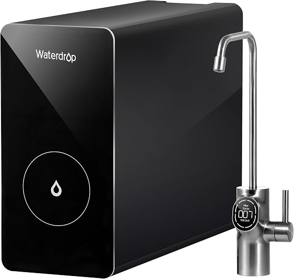
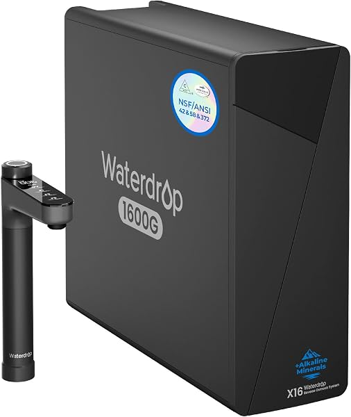

Waterdrop Reverse Osmosis Review 2026: D6, G3P600, G3P800, X16, M6H Compared
PureFlow Lab is reader-supported. We may earn a commission when you buy through links in this guide — at no extra cost to you. As an Amazon Associate, we earn from qualifying purchases. See our Disclosure for details.
Top Picks (At a Glance)
The Waterdrop lineup we cover in this review, ranked by use case:

Waterdrop G3P600 — 600 GPD, 8-Stage
The sweet spot of Waterdrop’s lineup. Tankless, 600 GPD, 2:1 wastewater ratio, NSF/ANSI 42/53/58/372 certifications. Right pick for most homeowners committed to the Waterdrop ecosystem. ~$439.
Check Price on Amazon →
Waterdrop G3P800 — 800 GPD Smart
Top of the mainstream tankless line. 800 GPD, smart leak detection, TDS display in the faucet. Step up from the G3P600 if budget allows and you want the smart features. ~$849.
Check Price on Amazon →
Waterdrop D6 — 600 GPD Tankless Budget
The cheapest tankless Waterdrop. 600 GPD, 2:1 ratio, simpler 6-stage filtration (vs the G3P600’s 8-stage). The right pick if you want Waterdrop’s tankless design at a budget price. ~$299.
Check Price on Amazon →
Waterdrop X16 — 1,600 GPD, Alkaline, 11-Stage
The flagship. 1,600 GPD output (effectively unlimited), 11-stage filtration with alkaline remineralization, NSF/ANSI 42/58/372 certifications, smart faucet. For households that want absolute best performance. ~$1,599.
Check Price on Amazon →
Waterdrop M6H Instant Hot — Countertop RO with Hot Water
Countertop RO with built-in instant hot water dispenser (5 temperature settings). No plumbing required, NSF/ANSI 58 & 372 certified, glass pitcher included. ~$359.
Check Price on Amazon →TL;DR: Waterdrop is the strongest tankless-first reverse osmosis brand on the market in 2026. Their lineup is confusingly named (G3, D6, X16, M6H…) but covers every price tier from $299 (the D6) to $1,599 (the X16). For most homeowners, the G3P600 at $439 is the right pick — full NSF certifications, 600 GPD output, 2:1 wastewater ratio, tankless design. Step up to the G3P800 for smart features and 800 GPD; step down to the D6 for budget. Renters and apartment dwellers should look at the M6H Instant Hot countertop ($359) for zero-plumbing RO water with a built-in hot water dispenser. The flagship X16 at $1,599 adds alkaline remineralization and 1,600 GPD capacity for households that want absolute best performance.
If you’ve been researching reverse osmosis systems, you’ve almost certainly run into Waterdrop. They’ve been one of the fastest-growing residential RO brands in the US over the past five years, primarily on the strength of their tankless designs and aggressive NSF certifications.
This review covers their full RO lineup — five models spanning the budget tankless, value tankless, premium tankless, flagship, and countertop categories — with honest assessments of where each model wins and where it doesn’t.
About Waterdrop
Waterdrop launched in 2015 as a US-based water filtration brand and has grown rapidly through a clear product philosophy: build tankless RO systems with NSF certifications and modern industrial design, sell them direct through Amazon and major retailers. Their early G3 lineup arguably created the modern tankless RO category — most competitors are now playing catch-up.
The brand’s core differentiators:
- Tankless-first. Almost every product in the lineup is tankless. The traditional 3-4 gallon storage tank that legacy RO systems require is gone.
- NSF certifications across the board. Most Waterdrop systems carry NSF/ANSI 42 (chlorine, taste, odor), 53 (lead, VOCs, heavy metals), 58 (RO performance), and 372 (lead-free materials). That’s the full stack of certifications that matter.
- Better wastewater ratios. Waterdrop systems hit 2:1 or 3:1 pure-to-drain, vs the 1:3 or 1:4 ratios of legacy tank-based systems.
- Industrial design that actually looks good. Most RO systems look like medical equipment. Waterdrop systems are designed to be visible under your sink without being ugly.
- Smart features on premium models. Leak detection, TDS displays in the faucet, LED status indicators — features that competitors are now adding because Waterdrop established them as table stakes.
What Waterdrop doesn’t do well: cheap entry-level pricing (their cheapest tankless is $299), tank-based systems for buyers who specifically want them, and any sort of whole-house RO product. For those use cases, look at iSpring, APEC, or Express Water.
The Waterdrop Lineup Explained (Decoding the Names)
Waterdrop’s naming scheme is genuinely confusing. There’s no consistent letter-number pattern, and they’ve revised the lineup multiple times. Here’s what each model line actually means in 2026:
- G3 series (G3, G3P600, G3P800): The flagship tankless line. The “P” indicates the GPD rating. G3 is the original (400 GPD), G3P600 is the 600 GPD update with 8-stage filtration, G3P800 is the 800 GPD premium with smart features. Most-recommended line for general residential use.
- D6: The budget tankless. 600 GPD output (same as G3P600) but simpler 6-stage filtration and no smart features. The right pick if you want the Waterdrop tankless design at a lower price point.
- X16: The flagship 2024-2026 model. 1,600 GPD, 11-stage including alkaline remineralization. Top of the under-sink RO line.
- M-series (M5, M6H): Countertop systems. The M6H is the most popular — adds an instant hot water dispenser with 5 temperature settings.
- A1: Older countertop hot/cold dispenser line (largely replaced by the M6H).
- K-series: Various older countertop and pitcher products. Generally superseded by current lineup.
If you’re shopping in 2026, you should be choosing among the D6, G3P600, G3P800, X16, or M6H depending on price tier and form factor. The rest of the lineup is older or specialty products.
Top Picks Detailed
Best Overall: Waterdrop G3P600 (600 GPD, 8-Stage)
The Waterdrop G3P600 is the right Waterdrop pick for most homeowners. 600 GPD output is more than any normal household will use, 8-stage filtration handles everything from sediment through final taste polishing, and the tankless design eliminates the need for a storage tank under the sink (saving 12-18 inches of cabinet depth).
NSF certifications across all four relevant standards (42, 53, 58, 372). 2:1 wastewater ratio is dramatically better than legacy 1:3 or 1:4 systems — over a year of use, that’s tens of thousands of gallons less wastewater for the same drinking water output. Smart LED faucet provides at-a-glance status indicators.
The G3P600 is essentially the same architecture as the higher-end G3P800 at half the price. The G3P800 adds 200 GPD of capacity and smart leak detection — both nice-to-haves but neither is essential for most homes.
Pros: Full NSF certifications, tankless design, 2:1 wastewater ratio, smart LED faucet, 4.5-star rating, half the price of the flagship G3P800. Cons: No leak detection like the G3P800. Higher upfront cost than the budget D6. Replacement filters are slightly pricier than competing brands.
Price at last check: $439.00. Check Price on Amazon →
Best Premium Mainstream: Waterdrop G3P800
The Waterdrop G3P800 is the top of Waterdrop’s mainstream tankless line. Same architecture and NSF certifications as the G3P600 with 200 additional GPD of capacity, smart leak detection that shuts off the water supply automatically, and a faucet with built-in TDS display showing real-time inlet and outlet water quality.
The smart leak detection feature is genuinely valuable — RO systems sit under your sink for years, and even a slow leak can cause significant water damage by the time you notice it. The G3P800 catches leaks immediately and shuts off the supply before water damage occurs. Several owner reviews specifically mention the feature saving them from significant damage.
Whether the extra $410 over the G3P600 is worth it comes down to two factors: do you want the leak protection, and do you care about the TDS display? The capacity difference (800 vs 600 GPD) is mostly academic — both are more than any normal household needs.
Pros: Smart leak detection (genuinely valuable), TDS display in faucet, 800 GPD capacity, full NSF certifications, 4.6-star rating from 1,000+ reviews. Cons: Significantly more expensive than the G3P600 for benefits most households won’t fully use. The 800 GPD capacity is overkill for most homes.
Price at last check: $849.00. Check Price on Amazon →
Best Budget Tankless: Waterdrop D6
The Waterdrop D6 is the cheapest tankless Waterdrop and the right pick if you want the tankless design at a budget price. 600 GPD output (matches the G3P600), 2:1 wastewater ratio, smart faucet with status indicators.
The trade-off vs the G3P600 is filtration depth — the D6 is 6-stage where the G3P600 is 8-stage. The G3P600’s additional stages handle finer particle filtration and a more thorough final polish, which matters for taste but doesn’t significantly affect contaminant removal at the levels that matter for health. For most drinking water purposes, the D6’s filtration is genuinely sufficient.
What you give up with the D6: full NSF certification breadth (the D6 has limited certifications vs the G3P600’s full 42/53/58/372 stack), no leak detection, and slightly worse aesthetics. What you gain: $140 saved.
Pros: Cheapest Waterdrop tankless, same 600 GPD capacity as G3P600, smart faucet included, easy installation. Cons: Limited NSF certifications compared to G3P600, 6-stage filtration is shallower than higher-end Waterdrop models, fewer smart features.
Price at last check: $299.00. Check Price on Amazon →
Best Flagship: Waterdrop X16 (1,600 GPD, Alkaline)
The Waterdrop X16 is the brand’s flagship product launched in the 2024-2026 cycle. 1,600 GPD output (about double the G3P800), 11-stage filtration including alkaline remineralization (adds minerals back after the RO process so the water tastes like spring water instead of “flat”), NSF/ANSI 42, 58, and 372 certifications, 3:1 pure-to-drain ratio, and a smart black faucet.
The X16 targets the buyer who wants every premium feature in one unit — and they get most of them. The alkaline remineralization addresses the most common complaint about RO water (the flat taste from being stripped of minerals). The 1,600 GPD capacity means you genuinely never wait for water under any household demand. The black faucet is the best-looking design in the Waterdrop lineup if matte-black hardware fits your kitchen.
The catch is price. At $1,599, the X16 is roughly 4x the cost of the G3P600. For most households, that money is better spent on a separate alkaline cartridge add-on ($60-$150) for the G3P600, which gets you most of the same benefit at a fraction of the upgrade cost.
Pros: Best-in-class capacity (1,600 GPD), alkaline remineralization built in, 11-stage filtration, smart black faucet, 4.6-star rating. Cons: Significantly more expensive than the G3P600 for benefits most homes won’t fully utilize. Missing NSF/ANSI 53 certification (vs the G3P600 and G3P800 which include it).
Price at last check: $1,599.00. Check Price on Amazon →
Best Countertop: Waterdrop M6H Instant Hot
The Waterdrop M6H Instant Hot is the right pick for renters, apartment dwellers, or anyone who can’t or doesn’t want to install an under-sink system. The unit sits on your countertop, fills from your tap, and dispenses RO-purified water plus on-demand hot water at 5 selectable temperatures (great for tea, instant noodles, baby formula, etc.).
7-stage RO filtration with NSF/ANSI 58 and 372 certifications, 3:1 pure-to-drain ratio, glass pitcher included for collected pure water, BPA-free construction throughout. The instant hot water feature is the standout — most countertop RO systems just dispense room-temperature water. The M6H eliminates the need for a separate kettle or hot water dispenser.
The trade-offs vs an under-sink RO: meaningfully less treated water capacity at any given moment (you’re limited by the unit’s reservoir), takes counter space (about the footprint of a coffee maker), requires manual refilling from the tap, and the unit is visible on your countertop rather than hidden under the sink.
Pros: Zero plumbing required, instant hot water dispenser at 5 temperature settings, NSF certifications for what matters, glass pitcher included, 4.6-star rating. Cons: Lower throughput than under-sink systems, takes counter space, manual tap refilling required, higher cost per gallon than under-sink RO over the long run.
Price at last check: $359.00. Check Price on Amazon →
What Sets Waterdrop Apart
Three things genuinely distinguish Waterdrop from the legacy RO competition:
1. Tankless-first product strategy. While iSpring, APEC, and Express Water all primarily sell tank-based systems with tankless options, Waterdrop’s lineup is almost entirely tankless. This means their tankless engineering is more refined — better wastewater ratios, smaller footprints, more reliable booster pump integration.
2. NSF certification breadth. Many lower-priced RO systems carry only NSF/ANSI 58 (RO performance). Waterdrop’s mainstream lineup (G3P600, G3P800) carries the full stack of 42/53/58/372, which means the same system is certified for chlorine reduction, lead removal, RO performance, and lead-free materials. This is what you want for actual drinking water purity.
3. Smart features that aren’t gimmicks. The leak detection on the G3P800 has prevented real water damage for multiple owners (search the reviews — multiple verified accounts of the feature saving cabinets and floors). TDS displays in the faucet provide real-time verification that the system is working. These features work and provide actual value, vs the smart features on competing systems that often feel like marketing checkboxes.
What Waterdrop Could Do Better
Three honest weaknesses in the brand:
1. The naming scheme is a mess. G3, G3P600, G3P800, D6, X16, M6H, M5, A1, K-series — there’s no logical pattern, and Waterdrop revises the lineup frequently enough that what was their flagship two years ago is now an older model line. New buyers spend significant time decoding which model is which.
2. Filter replacement costs are higher than competitors. Over a 5-year ownership period, Waterdrop’s filter replacement costs run 15-30% higher than equivalent iSpring or Express Water systems. The actual replacement is easy (quick-change cartridges, no tools needed) but the cumulative cost adds up.
3. No whole-house RO product. Waterdrop’s entire lineup is point-of-use (under-sink or countertop). For whole-house applications, you need to look at iSpring (RCB3P, RCS5T, CRO1000), US Water Systems (Defender), or Crystal Quest. See our best whole house RO systems guide for the alternatives.
Waterdrop vs Competitors
vs APEC ROES-50: APEC is the cheaper proven tank-based alternative ($212 vs $439 for the G3P600). The trade-off is that APEC is tank-based (takes cabinet space), tank-style maintenance (annual sanitization), and no smart features. Waterdrop is the better choice if you want tankless and smart; APEC is the better choice if you want a no-frills proven workhorse at lower cost.
vs iSpring RCC7AK: iSpring’s RCC7AK is the closest competitor at $235, with the addition of alkaline remineralization (which Waterdrop only offers on the $1,599 X16). The trade-off is that the RCC7AK is tank-based with 75 GPD output vs Waterdrop’s tankless 600+ GPD. iSpring is the better choice if alkaline remineralization is essential and you want to keep cost down; Waterdrop is the better choice if tankless and capacity matter more.
vs Express Water RO5DX: Express Water is the budget tank-based pick at $153. Significantly cheaper than even the Waterdrop D6, but tank-based, fewer NSF certifications, and the brand has less established support than Waterdrop. Express Water is the right pick for pure budget shopping; Waterdrop is worth the upgrade if you want tankless and modern features.
vs AquaTru: AquaTru is the closest countertop competitor to the M6H. AquaTru focuses on 4-stage filtration without the instant hot water feature; the M6H adds the hot water dispenser. AquaTru is the more established countertop brand; the M6H is the more feature-rich modern alternative.
For a deeper comparison, see our best reverse osmosis systems guide.
Comparison Table
| Model | Type | GPD | Stages | Wastewater | NSF Certs | Smart Features | Price |
|---|---|---|---|---|---|---|---|
| D6 | Tankless | 600 | 6 | 2:1 | Limited | Smart faucet | $299 |
| G3P600 | Tankless | 600 | 8 | 2:1 | 42/53/58/372 | Smart LED faucet | $439 |
| G3P800 | Tankless | 800 | 8 | 2:1 | 42/53/58/372 | TDS display, leak detection | $849 |
| X16 | Tankless | 1,600 | 11 | 3:1 | 42/58/372 | Smart black faucet, alkaline | $1,599 |
| M6H | Countertop | varies | 7 | 3:1 | 58/372 | 5-temp instant hot water | $359 |
Buyer Scenario Decision Matrix
Match your situation:
| Your Situation | Right Waterdrop Pick | Why |
|---|---|---|
| First Waterdrop, want value + quality | G3P600 | Best overall value-to-feature ratio in the lineup |
| Budget-focused but want tankless | D6 | Cheapest Waterdrop tankless, decent specs |
| Want smart features and leak protection | G3P800 | Leak detection alone justifies upgrade for nervous installers |
| Want best-in-class everything (cost no object) | X16 | Flagship features, alkaline included, 1,600 GPD capacity |
| Rent, apartment, or want countertop with hot water | M6H Instant Hot | No plumbing, hot water dispenser is a great add-on |
| You want alkaline water but don’t want to pay for X16 | G3P600 + separate alkaline cartridge | Save $1,000+ by adding a $60-$150 alkaline add-on |
| You want RO at every tap in the house | Look elsewhere — Waterdrop doesn’t make whole-house RO | See our best whole house RO guide |
| Tight budget, willing to give up tankless | Look at iSpring RCC7AK ($235) or Express Water RO5DX ($153) | Tank-based systems are cheaper than Waterdrop’s lineup |
FAQ
Are Waterdrop RO systems any good?
Yes — Waterdrop is one of the strongest residential RO brands in 2026. Tankless-first product strategy, NSF certifications across their mainstream lineup, modern industrial design, and smart features that work. The main weaknesses are higher filter replacement costs vs competitors and confusing model naming.
What’s the difference between the Waterdrop G3, G3P600, and G3P800?
The G3 is the original 400 GPD model. The G3P600 is the updated 600 GPD version with 8-stage filtration. The G3P800 is the 800 GPD premium model with smart leak detection and TDS-display faucet. All three use the same fundamental tankless architecture; the differences are output capacity and smart features.
Is the Waterdrop X16 worth the price?
For most households, no. The G3P600 ($439) plus a separate alkaline cartridge add-on ($60-$150) gets you most of the X16’s benefits (alkaline water, full filtration) at about a third of the cost. The X16 makes sense for buyers who specifically want 1,600 GPD capacity, the 11-stage filtration depth, or the unified design.
Is the Waterdrop G3P800’s leak detection worth it?
For risk-averse installers or anyone with finished cabinets and floors, yes. Multiple verified owner reviews report the leak detection feature catching slow leaks before they caused water damage. If a single incident would mean replacing your kitchen flooring, the G3P800 upgrade pays for itself. For DIY-comfortable buyers willing to inspect under the sink monthly, the G3P600 without leak detection is probably fine.
How easy is Waterdrop installation?
Genuinely DIY-friendly. Waterdrop systems include all necessary fittings, quick-connect tubing, and detailed instructions. Plan 1-2 hours for a first install. The trickiest part is drilling a hole in your sink for the dedicated RO faucet — stainless sinks need a stepped drill bit ($15), granite/quartz countertops require a diamond hole saw (or hire a plumber for that part).
How long do Waterdrop filters last?
The pre-filters (sediment and carbon stages) typically last 6-12 months depending on water quality. The RO membrane lasts 2-3 years in normal residential use. The post-treatment carbon polish stage lasts 12 months. Expect to spend $90-$180/year on replacement filters across the lineup.
Does Waterdrop make a whole house RO system?
No. Waterdrop’s entire lineup is point-of-use (under-sink or countertop). For whole-house RO, look at the US Water Systems Defender, iSpring CRO1000, or Crystal Quest configured systems. See our best whole house RO guide for the full alternatives.
Where are Waterdrop systems made?
Waterdrop is a US-based brand with manufacturing in China. The systems are designed and engineered in the US (San Jose, CA-based design team) with production in established Chinese water-treatment manufacturing facilities. Quality control has been consistent across the lineup.
Bottom Line: Which Waterdrop Should You Buy?
For most homeowners: the Waterdrop G3P600 at $439. Full NSF certifications, 600 GPD tankless output, 2:1 wastewater ratio, smart LED faucet. This is the sweet spot of the Waterdrop lineup and a strong overall pick in the under-sink RO category.
If you want smart leak detection and TDS monitoring: step up to the G3P800 at $849. The leak detection alone justifies the upgrade for many buyers.
On a tighter budget: the Waterdrop D6 at $299 gets you the tankless design and 600 GPD at the cost of full NSF certifications and some smart features.
For best-in-class everything: the flagship Waterdrop X16 at $1,599 adds 1,600 GPD capacity, alkaline remineralization, and 11-stage filtration. Overkill for most homes but the right pick if you want the best.
For renters or anyone wanting countertop: the Waterdrop M6H Instant Hot at $359 — no plumbing required, RO water plus instant hot water dispenser in one unit.
If you want RO water at every tap in the house: Waterdrop doesn’t make a whole-house RO product. See our best whole house RO systems guide for the alternatives.
Ready to buy?
Check current pricing on whichever Waterdrop fits your situation. Your clicks keep these guides free.
Shop All Waterdrop RO Systems on Amazon →
Found this useful? Share it with someone shopping the Waterdrop lineup.
Keep Reading
- Best Reverse Osmosis Systems for Home — Waterdrop compared against all major competitors
- Best Whole House Reverse Osmosis Systems — for whole-house RO (Waterdrop doesn’t make these)
- Whole House RO vs Under-Sink RO — decision framework
- Whole House RO Cost Guide — pricing breakdown
- Express Water Reverse Osmosis Review — the budget tank-based alternative
- AquaTru Reverse Osmosis Review — the countertop alternative
- Best Countertop Reverse Osmosis Systems — where the M6H fits in the countertop field
- Best Tankless Reverse Osmosis Systems — Waterdrop’s tankless models vs the field
- APEC vs iSpring vs Waterdrop Showdown — the G3P600 compared head-to-head against the budget leaders